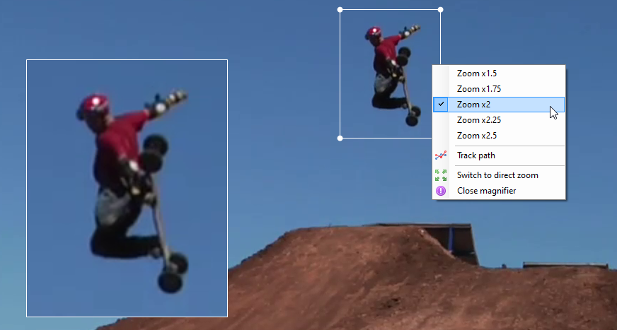

Image transformation¶
Image orientation¶
To change the orientation of the image use the menus under .
The following options are available:
No rotation
90° clockwise
90° counter-clockwise
180°
Videos filmed in portrait mode on a smartphone typically already have a flag embedded in the video file and don’t need to be manually rotated.
Image mirroring¶
To mirror the image, that is to flip it along the vertical axis, use the menu Image mirror.
Zoom & magnification¶
To zoom into the image use CTRL + mouse wheel or CTRL + Minus and CTRL + Plus.
CTRL + Numpad0 resets the zoom level.
The magnifier tool can also be used to create a picture in picture magnified area.
Image aspect ratio¶
To change the aspect ratio of the image use the menus under .
Some devices use non-rectangular pixels and don’t fill the corresponding pixel aspect ratio value in the file metadata. In these case it might be necessary to force the aspect ratio to a known value.
The following options are available:
Auto detection
Force 4:3
Force 16:9
Deinterlacing¶
To deinterlace the video use the menu .
Some capture devices store video using an interlaced format. Interlaced videos store half images at twice the frame rate, alternating odd and even rows. This causes a combing artifact when the filmed motion is fast as objects or subjects move during the half frame interval.
The deinterlacing algorithm reconstructs full images by combining rows from adjacent frames.

Debayering¶
Videos saved in Bayer mode contain the raw sensor data before color reconstruction. The color can be rebuilt using the menu under .
The following options are available:
RGGB
BGGR
GRBG
GBRG
The appropriate option to select depends on the device and mode used during recording.